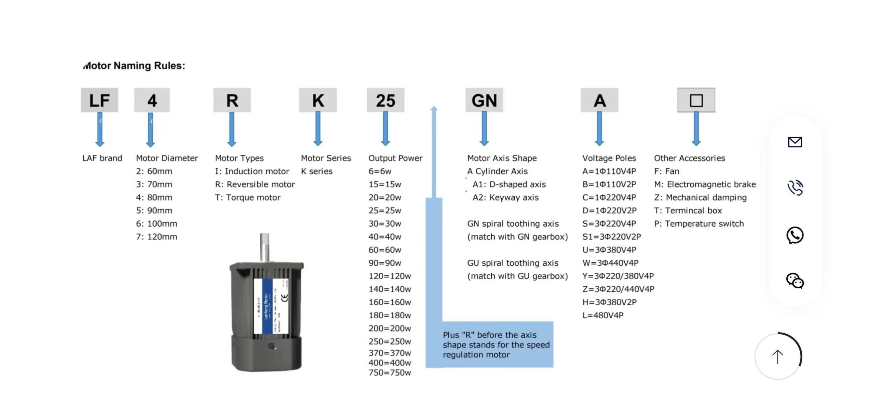

June – September 2025 · Statesville, NC, USA
At Yanjan USA, I worked as a maintenance and process engineering intern, contributing to the reliability and optimization of high-speed manufacturing lines producing nonwoven materials. This role blended mechanical repair, process analysis, and documentation to ensure consistent and safe operation.
Motor repair and inspection work under the production line — ensuring stability and performance of the motion system.
A motor naming convention chart found online and implemented as a reference for unifying identification across production lines — improving maintenance and repair reliability.
Inspecting PLC wiring and control components to ensure safe signal flow and reliable automation response.
I also created an Excel-based maintenance guidebook summarizing troubleshooting patterns, helping engineers standardize preventive maintenance and minimize unexpected line stoppages.